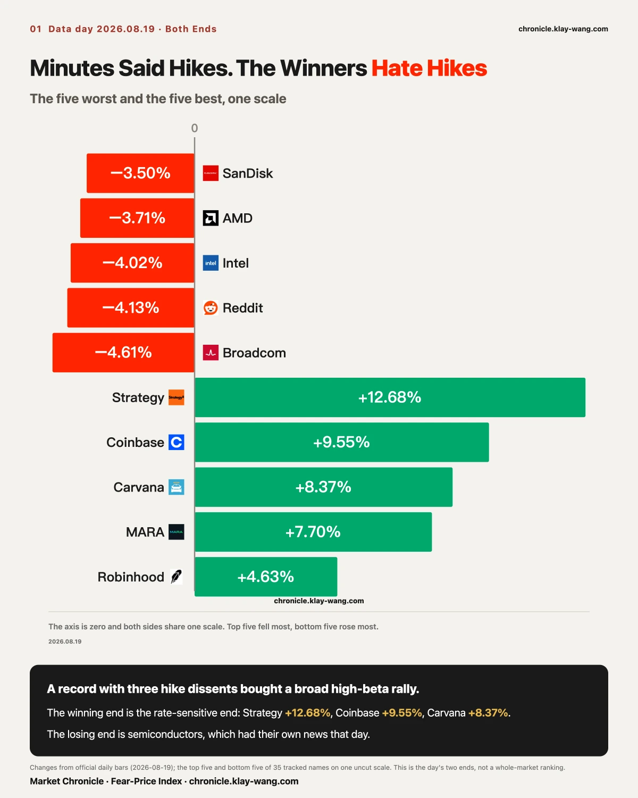
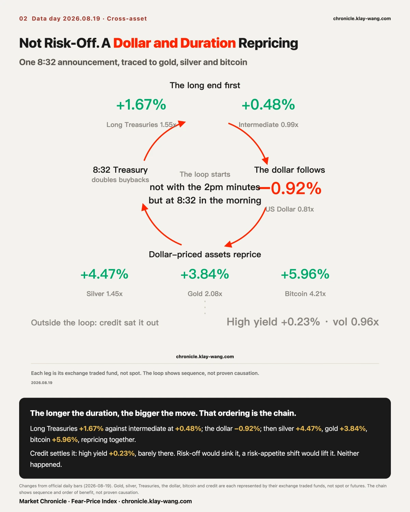
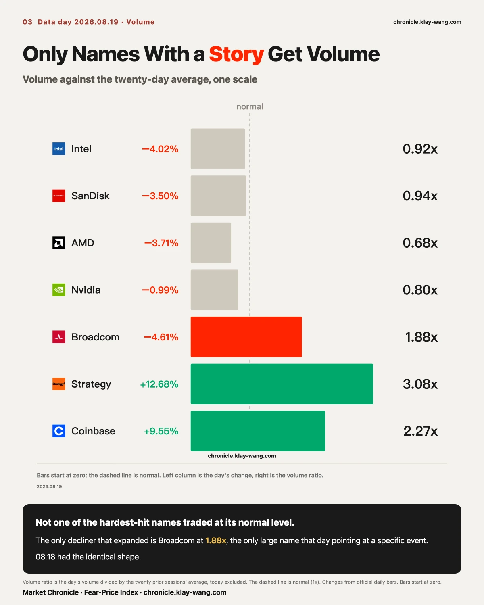
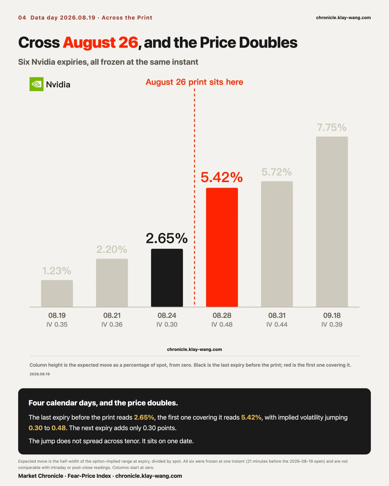
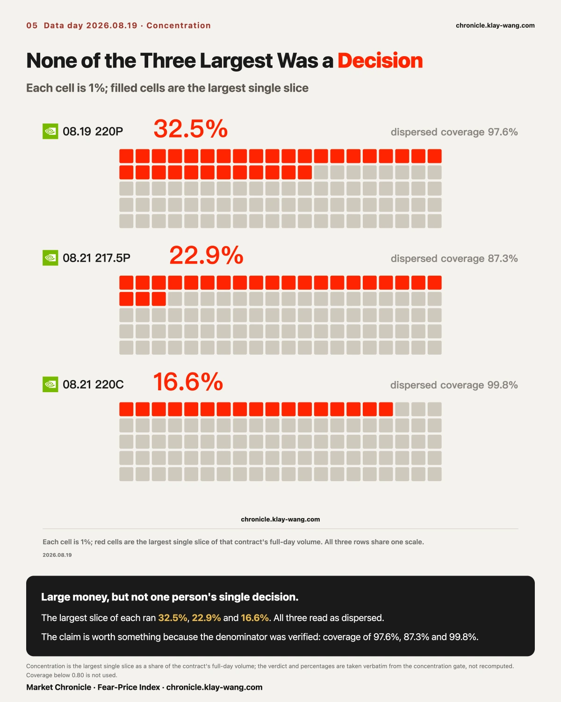
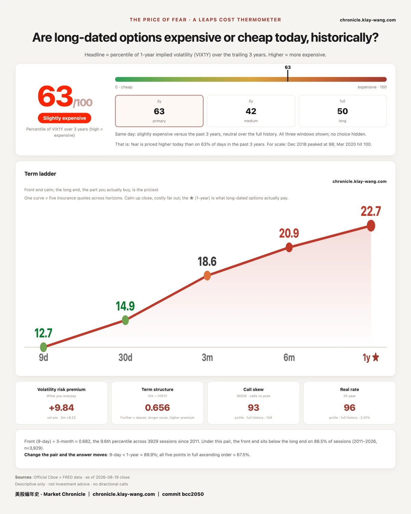

Two storylines ran today. The July minutes read hawkish, with three voting members preferring a hike. And semiconductors were sold, after a report that Google handed part of its custom silicon work to another firm; Broadcom closed down 4.61%. Both are true. The conclusion people drew from stacking them, that this was a risk-off day, is not supported by the tape.
Risk-off means someone is selling. The four hardest-hit names all traded below their normal volume, the lowest at 0.68x. Nobody was selling. On the same session the options tape did the opposite: nine Microsoft call strikes carried roughly 115 million dollars, and index options opened new positions on two September expiries, the most extreme at 59.7 times its open interest.
So this was not money leaving. It was price sliding down a book nobody was bidding, while a different pot of money paid up for a handful of specific September dates.

Our read: the minutes contributed almost nothing to today's price. The day's direction was set five and a half hours before they landed.
At 8:32 the Treasury announced it was at least doubling liquidity support buybacks in long-dated coupons, from 2 billion dollars per operation to 4 billion, effective September 9. The 30-year yield fell 8 basis points to 5.19% and the dollar index hit an 11-week low. The minutes came at 2pm. The five biggest gainers were Strategy at 12.68%, Coinbase at 9.55%, Carvana at 8.37%, MARA at 7.70% and Robinhood at 4.63%, every one of them a direct beneficiary of a lower long end and a softer dollar.
Buyback expansion is usually filed under technical liquidity management and assumed not to move risk assets. Today is a clean counterexample: it moved price more than a record carrying three hike dissents.
As for the minutes, nine to three to hold at 3.5% to 3.75%. What matters is not the count, it is where the three sat. All three were regional reserve bank presidents, from Cleveland, Minneapolis and Dallas. Not one governor joined. Regional dissents are routine in Fed history; governor dissents are rare. The Board is where policy weight sits, and the Board lost nothing today. This is a hawkish periphery around an unmoved center, and reading it as the Fed turning hawkish reads too much into it.
One item drew almost no attention and we think it outweighs the three dissents: the chair proposed cutting policy meetings from eight a year to six, so more information could accumulate between them. No conclusion was reached. Fewer meetings means fewer tradable dates. The money does not disappear; it stacks onto the dates that remain. Two sections below are instances of exactly that.

Those two look identical on a chart and leave completely different traces: selling leaves volume behind, an absent bid does not. Today was the second one.
Intel traded 0.92x its normal volume, SanDisk 0.94x, AMD 0.68x, Nvidia 0.80x, all while falling 3 to 4 percent. A sale needs a buyer on the other side. If volume did not expand while price fell hard, the selling was not heavier than usual; what went missing was the buying.
The only decliner that expanded was Broadcom at 1.88x, and it was the only large name pointing at a specific event. It gapped down before the open and was the only true downward gap on the board.
August 18 had the identical shape: the only large name with real volume expansion was Meta at 1.68x, also the only one with a name attached. Two days running is no longer coincidence. It is a usable rule: to find who actually moved, look at who expanded, not at who fell most.
One corollary worth stating plainly: the semiconductor decline had its own cause and nothing to do with the Fed. Folding it into a risk-off story merges two different events into one.

Microsoft rose 0.56%, the quietest of the megacaps. By the close it carried nine option strikes all on one expiry and all calls.
The nine total roughly 115 million dollars, the largest being the 415 strike at 37.4 million, then 425 at 17.6 million and 435 at 16.6 million. Every one expires August 28, nine trading days out. Eight of the nine traded at 2.0 to 3.1 times their open interest, which means these are newly opened, not old positions changing hands.
For contrast, Nvidia had forty-seven strikes in our table totalling roughly 210 million, larger, but spread across several expiries and both directions. Microsoft's nine sit on one date and one direction. That is the most concentrated bet on the board today.
We do not know who bought them and the tape does not show the other side. But when one date, one direction, nine strikes and nine figures all hold at once, that is worth more of your attention than the 0.56% print.

What actually got priced today was one company's single day, and the way it was bought tells you its nature.
Nvidia reports after the close on August 26. Frozen 21 minutes before the open: the August 24 expiry, the last before the print, carries an expected move of ±5.81 dollars, 2.65% of spot, at 0.30 implied volatility. The August 28 expiry, the first covering it, carries ±11.92 dollars, 5.42%, at 0.48. Four calendar days apart and the price doubles.
If the worry were that this stretch would be choppy, the repricing would spread evenly across tenor. It does not. August 31 adds only 0.30 points on top of August 28. The buyers wanted a date, not a stretch of volatility.
The inverse is more telling: at 2.65%, the last expiry before the print says the market is barely worried about the five sessions leading up to it. The worry has an edge, and the edge is that one day.
Our judgment: this collapsing of price onto single dates explains today's option prices better than any macro meeting does, and it is the most stable structural change of the past two years.

The three largest Nvidia contracts by dollars: the 220 put expiring today at 24.8 million with its largest slice at 32.5%; the August 21 217.5 put at 10.82 million and 22.9%; the August 21 220 call at 10.52 million and 16.6%. All three read as dispersed, meaning these are many prints adding up rather than one person's decision.
The claim is worth something only because the denominator was verified: coverage of 97.6%, 87.3% and 99.8%. One contract on August 6 produced the same kind of low number on 0.11% coverage and meant nothing at all.

On the day a record carrying three hike dissents was published, the price of insuring the next year went down. Only one of those two can be the market's real posture, and we believe the second, because someone paid for it.
Today reads 63.4 against 68.4 on August 18. The one-year volatility quote fell from 22.94 to 22.69. The five rungs run 12.66, 14.89, 18.57, 20.90 and 22.69, all lower, still a clean upward slope.
Note that all five fell, not just the front. A cheaper front end could be explained away as one day of calm; five rungs together means the whole curve repriced. That points the opposite way from the minutes.
So the market's own pricing of this record is simple: words are words, and nobody paid an extra dollar of premium for them.
The four hardest-hit names all traded below normal volume, the lowest at 0.68x. Nobody was selling; nobody was bidding.
Microsoft rose 0.56% on the day, and by the close carried nine option strikes on one expiry in one direction, roughly 115 million dollars.
The Fed met all day and made no index option more expensive. One company's single date doubled the price of an option.
Fear-Price Index · 2026-08-19 · reading 63/100: one-year volatility (VIX1Y) at 22.69, the 63rd percentile of the past three years, where higher means more expensive. Daily ledger and methodology → chronicle.klay-wang.com · Please credit: Fear-Price Index · Market Chronicle